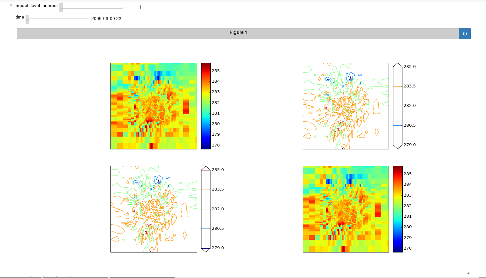
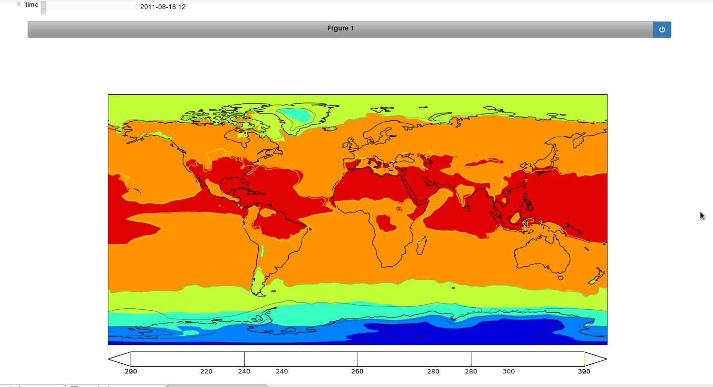

Browsing Cubes¶
The Cube Browser package enables you to visualize your Iris cubes in a Jupyter notebook. Cube Browser utilizes Python and the matplotlib, Iris and cartopy libraries while offering the additional functionality of plotting an entire cube without having to slice it.
Example Notebooks¶
The example described below shows how to plot a single cube on a single set of axes, but you can also use Cube Browser to make combinations of plots, for example side-by-side plots or overlays. The links below are examples of how you can achieve these.
 Writing a new Notebook¶
You can make use of the Cube Browser library to write a short notebook to display your Iris cube data. There are several advantages of using this approach, notably the flexibility in the options you can apply to each plot and the relative ease with which you can achieve this. Additionally, if you know what plots you would like and how you would like them laid out, this is a quick way of producing your plots and exploring your cube data. You can also apply the same notebook to many different datasets at different times or with different customizations.
Making Your Plots¶
Prepare your cube
First you have to choose and load the Iris cubes that you would like to visualize. If you need to perform any data manipulation on the cube, such as aggregating, collapsing or cube maths, this should also be done prior to plotting.
Configure axes
Cube Browser uses matplotlib functionality, so you must set up your axes in the layout that you desire for your plots. The steps that are required are:
- Define your map projection (you can use the Iris convenience function iplt.default_projection if this is appropriate)
- Define the number of axes and subplots that you need for your layout.
For example:
projection = iplt.default_projection(air_potential_temperature) ax1 = plt.subplot(111, projection=projection)
Define plots
The plot types that you can choose from are: Contourf, Contour and Pcolormesh. These plot types mirror those in matplotlib, as do the keyword arguments that you can pass in here. Please see the matplotlib documentation for a full docstring and list of keyword arguments.
You can define your plot using the following syntax (more examples are available in the links below):
plot = Contour(cube, ax1)
Display
Finally, you need to make the call to the Browser class to construct the plots with their sliders and arrange them in your chosen layout. Here is how you can do this:
Browser([plot]).display()